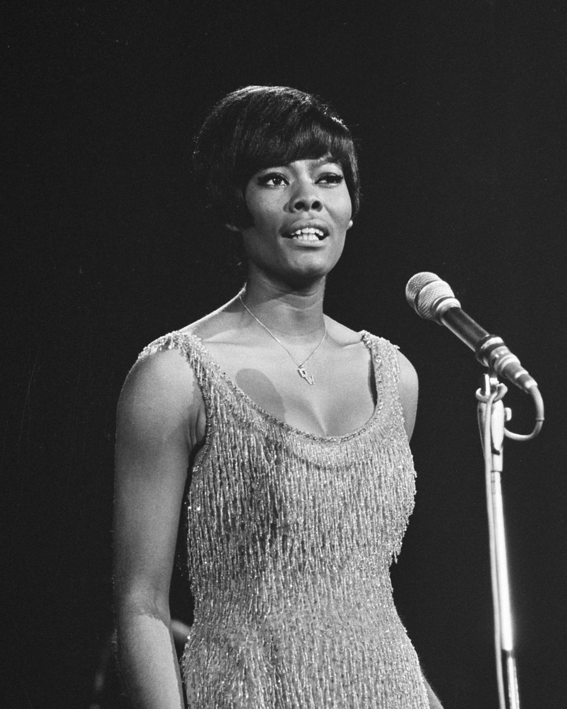

Do You Know the Way to San Jose is the 1968 Dionne Warwick single about a hopeful performer who gives up on Los Angeles.
Scepter Records issued it in April 1968, and it reached No. 10 on the Billboard Hot 100.
Warwick did not want to record it, yet it won her first Grammy.

Table of Contents
- About the Song
- How Was It Recorded?
- Why Did Warwick Dislike It?
- How High Did It Chart?
- Why Does It Still Matter?
- FAQ
What Is the Song About?
A Sad Story on a Bright Tune
Burt Bacharach wrote the music first, and Hal David wrote the lyrics afterward.
The words follow a young hopeful who came to Los Angeles to break into show business and failed.
Now she is packing up to go home.
The melody is upbeat, so the sadness sneaks up on you.
Songfacts quotes David telling NPR that he often paired a sad lyric with an optimistic melody.
Why San Jose?
David was not sure what inspired the title.
Wikipedia says he knew the city from his time stationed at Fort Ord during World War II.
Warwick had never been to San Jose when she recorded the song.
Our Dionne Warwick biography covers the rest of her run with the two writers.
How Was It Recorded?
The Last Bell Sound Single
Wikipedia says the song was recorded in 1967 at Bell Sound Studios in New York City.
It was the last Warwick single cut at that studio.
Session drummer Gary Chester plays a prominent bass drum, and Lou Mauro played electric bass.
Engineer Ed Smith devised the famous opening by attaching a microphone directly to Chester's bass drum head.
A Vocal That Had to Be Redone
Bacharach told Analog Planet, as Songfacts reports, that Warwick was not keen on the song.
He said her first vocal at the session was not good enough to use.
She had to return to the studio and overdub it.
Why Did Warwick Dislike the Song?
Warwick was blunt about it in a May 1983 interview with Ebony.
"It's a dumb song and I didn't want to sing it," she said.
She added that it was a hit anyway.
Songfacts quotes her saying she "giggled all the way to the bank."
Still, she includes it in almost every concert, and in 2014 San Jose named her its global ambassador of goodwill.
How High Did It Chart?
The single debuted on the Billboard Hot 100 at No. 84 on the chart dated April 13, 1968.
It reached No. 10 on the charts dated May 18, May 25 and June 1.
Billboard's archive shows 12 weeks on the Hot 100, and it ranked No. 88 for the year.
The flip side, "Let Me Be Lonely," also charted on the Hot 100.
Find the rest of that year in our 1968 music year guide.
| Chart | Country | Peak |
|---|---|---|
| Billboard Hot 100 | US | No. 10 |
| Billboard Adult Contemporary | US | No. 4 |
| Billboard Hot R&B Singles | US | No. 23 |
| Cash Box Top 100 | US | No. 2 |
| Record World Top 100 | US | No. 1 |
| Official Singles Chart | UK | No. 8 |
| RPM Top Singles | Canada | No. 8 |
Official Charts shows the UK run lasted 10 weeks and peaked at No. 8 in June 1968.
Why Does It Still Matter?
Her First Grammy
The record won Warwick the 1969 Grammy for Best Contemporary Pop Vocal Performance, Female.
It appears on the album Dionne Warwick in Valley of the Dolls, which was certified gold.
Wikipedia says the single sold more than 3.5 million copies worldwide.
Covers and Film
Ramsey Lewis cut an instrumental jazz version in 1968, and the Carpenters folded it into a Bacharach and David medley in 1970.
Frankie Goes to Hollywood covered it on their 1984 debut album.
In the 1997 film My Best Friend's Wedding, a restaurant table spontaneously sings it.
It stands among the Bacharach and David hits that began with Walk On By.
Honors
- Grammy Award, Best Contemporary Pop Vocal Performance, Female, 1969
FAQ
Who wrote the song?
Burt Bacharach wrote the music and Hal David wrote the lyrics.
They also produced the record.
What is the song about?
A small-town woman fails to break into show business in Los Angeles.
She heads home to San Jose.
Did Dionne Warwick like the song?
No.
She told Ebony in 1983 that it was a dumb song she did not want to sing.
How high did it chart?
It reached No. 10 on the Billboard Hot 100 in 1968.
In the UK it peaked at No. 8.
Did the song win a Grammy?
Yes.
It won Warwick her first Grammy, for Best Contemporary Pop Vocal Performance, Female, in 1969.
A reluctant singer, a bass drum mic and a bright tune about failure made a hit.
The Jazz and Easy Listening hub covers the rest of the sophisticated pop around it.
Press play above and hear why Do You Know the Way to San Jose still makes people sing along.